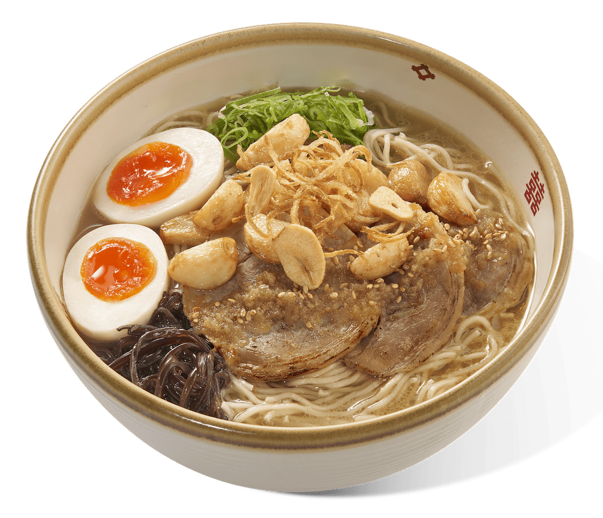
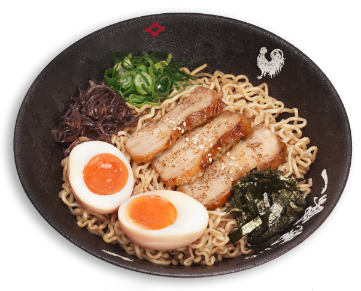
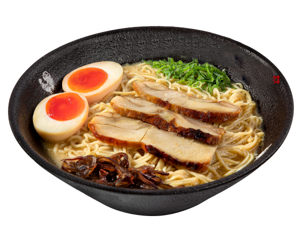
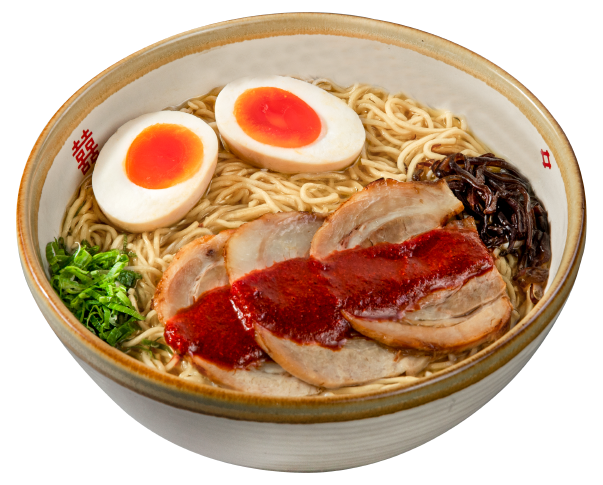

Chicken and garlic. The broth is made with chicken bones and vegetables. The hot broth is then poured over the noodles, along with slices of tender chicken, chopped green onions, and a generous helping of fried garlic. Additional toppings such as boiled egg and bean sprouts may also be added to the ramen.

Buta Ninniku Ramen
Pork and Garlic. The broth is made with pork bones, vegetables, and seaweed. The hot broth is then poured over the noodles, along with slices of tender pork, chopped green onions, and a generous amount of fried garlic. Other toppings such as boiled egg and seaweed may also be added to the ramen.

Tori Dry Ramen
Dry noodles with chicken. A sauce made with soy sauce, mirin, and other seasonings is then poured over the noodles and mixed well to coat each strand of noodle. Other toppings such as chopped green onions and seaweed may also be added to the dish.

Tori Signature Ramen
Chicken ramen. The broth is made with chicken bones, vegetables, and seaweed. Tori Signature Ramen made from a special blend of chicken bones and unique seasonings. Additional ingredients such as soft-boiled eggs, seaweed, or sesame seeds.

Buta Kara Ramen
Spicy pork ramen. The broth is made with pork bones, vegetables, and some chilli oil. The dish is finished with a drizzle of sesame oil and chili oil.